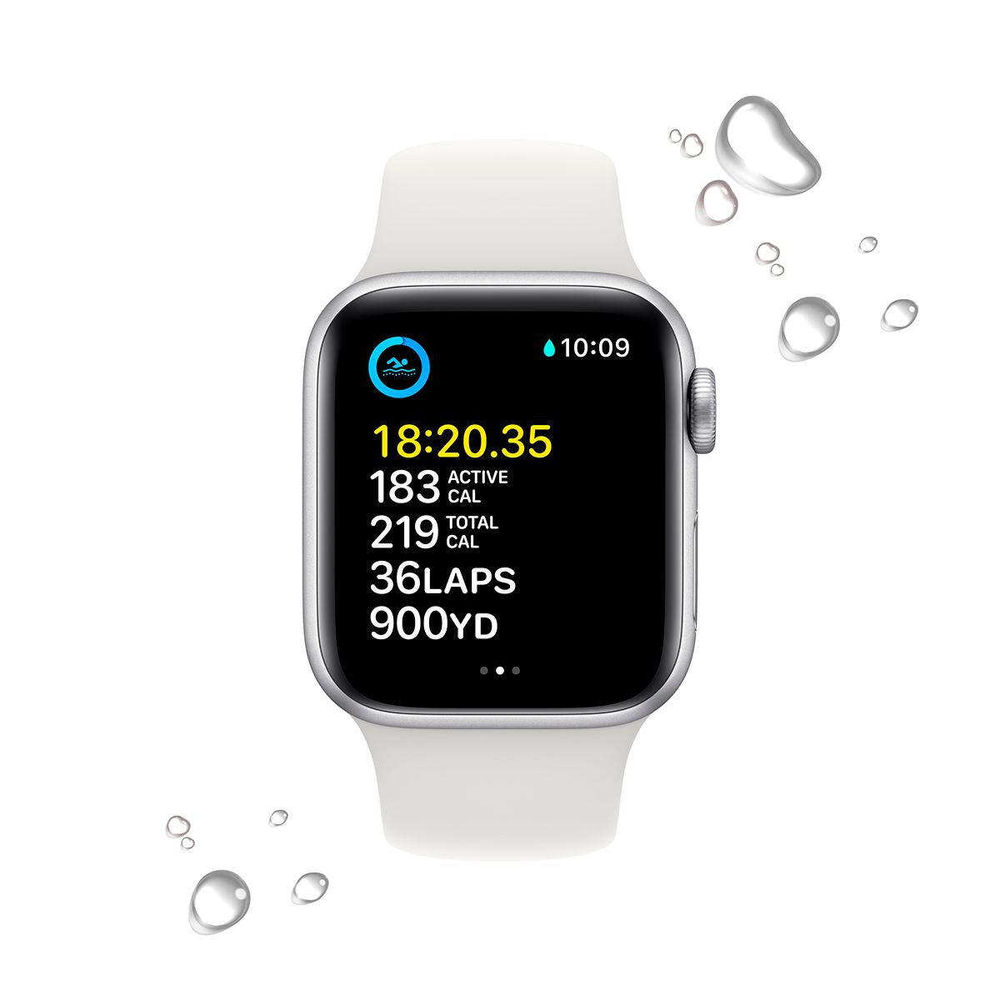

Watch
SE
Можна закохатися.
З багатьох причин.

Основні функції для підтримання здоров’я, безпеки й активного способу життя.
Захист від води
Основні характеристики
- Відповідайте на дзвінки та повідомлення просто із зап’ястя
- До 20% швидший за попередній Apple Watch SE
- Розширені функції безпеки, зокрема Виявлення падіння, Сигнал SOS і Виявлення аварій
- Відстежуйте свою активність протягом дня з Apple Watch, а потім переглядайте тенденції в додатку «Фітнес» на iPhone
- Покращений додаток «Тренування» з удосконаленими підходами до вправ
- Отримуйте сповіщення про високий, низький і порушений серцевий ритм
- Слухайте улюблену музику, подкасти й аудіокниги (для використання в моделях GPS)
- Захист від води
- Відстеження сну дає змогу дізнатися, скільки часу ви перебували у фазах швидкого, повільного та глибокого сну
- watchOS 9 підтримує покращений додаток «Тренування», новий додаток «Ліки», фази сну та дає змогу краще відстежувати ритм серця